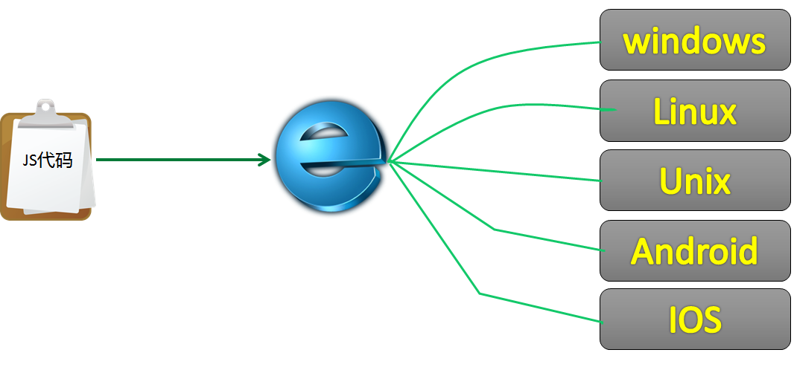
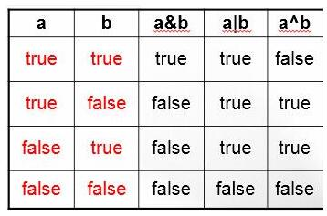

1.Javascript是一门面向对象的，跨平台的脚本语言
什么是面向对象？
对象：属性和方法
什么是跨平台？

什么是脚本语言？

HTML文件必须在浏览器里执行。
JS文件嵌入到HTML文件里才能执行。
凡是不能独立执行需要依赖其他程序的，通常都叫做脚本，也叫动态语言。（宿主语言）
2.JS历史
就在 Netscape Navigator 2.0 即将正式发布前，Netscape 将其更名为 JavaScript
因为Netscape与Sun合作，Netscape管理层希望它外观看起来像Java，因此取名为JavaScript

Javascript跟Java的关系：雷锋跟雷峰塔的关系，不过JS借鉴了很多Java的语法

Netscape Navigator 3.0 中的 JavaScript
IE 中的 JScript
CEnvi 中的 ScriptEase （一家称作 Nombas 的公司开发的可嵌入网页的脚本语言）
标准化


ECMA

1997年，ECMA发布262号标准文件（ECMA-262）的第一版
1999年，ECMAScript 3.0发布
2015年6月，ECMAScript 6 正式通过（ES6）
ECMAScript 可以为不同种类的宿主环境提供核心的脚本编程能力，因此核心的脚本语言是与任何特定的宿主环境分开进行规定的... ...
3.JS特点
- 解释性脚本语言
- 运行在浏览器（浏览器内核带有js解释器，Chrome v8引擎）
- 弱类型语言（松散型）
- 事件驱动（动态）
- 跨平台
4.JS用途
- 嵌入动态文本于HTML页面
- 对浏览器事件做出响应
- 读写HTML元素
- 在数据被提交到服务器之前验证数据
- 检测访客的浏览器信息（可以使用js代码判断浏览器类型）
- 控制cookies，包括创建和修改等
- 基于Node.js技术进行服务器端编程
视觉交互、数据交互、node.js（后台）
5.JS和H5的关系
页面三要素
- 结构：HTML
- 表现：CSS
- 行为：JS
H5是一种新的技术，就目前而言，我们所知的H5都是一些标签，但是有了JS之后，这些标签深层的扩展功能才得以实现。
比如video标签；我们对其理解为一个简单的标签；但是实际上，video标签还有更深层次的扩展功能；
6.JS书写位置
- 内部js：<script> document.write("hello world") </script>
- 外部js： index.js文件 document.write("hello world");
内部引入：<script src="path:to/index.js"></script>
注意：
1. script标签可以放在页面任何位置
2.下面这样写是错误的！！！
<script src="path:to/index.js">
document.write("hello world")
</script>
7.向页面输出内容
document.write("hello world");
document.write("<strong>我很man</strong>");
转义字符:
< || >
document.write("<strong>我很man</strong>");
8.变量
我需要500ml水，你怎么把水给我？
需要一个杯子，来盛着500ml水
当我需要的时候，你把这500ml水倒给我？
还是直接把杯子给我？
那你到底要给我哪个杯子？
杯子有一些特性，蓝色的？高的？矮的？
我们可以给杯子发个编号（起个名字）
你把一号杯子给我，你把叫Lisa的那个杯子给我
其实，这样的思想就是变量
我们可以声明一个变量（拿出一个杯子），给变量起个变量名（给杯子编号），最后给变量赋值（在杯子里面改盛水）
当我们需要这一数据的时候（需要水的时候），只需拿到变量名（杯子编号）即可
变量声明：
var a = "hello world"；
var | 声明变量的关键字 |
a | 变量名 |
= | 赋值 |
"hello world" | 变量的值 |
声明变量的时候计算机到底干了什么事呢？
我们所写的程序运行在内存中，当我们使用关键字var 声明一个变量的时候，计算机会从内存中留出一定储存空 间，为我们存放不同类型的内容。
地址指的是内存的编号
指针就是指向某个地址的工具，去取到这个地址对应的内存里面的值
分清左右两侧的意义：
JavaScript中的 ‘’=‘’ 和我们数学中的 ‘’ = ‘’不一样，在JavaScript中‘’=‘’的作用是赋值（取别称）。
var a = "hello world"; 这句话分成两个部分。
左值：在等号左侧，是声明一个变量并且起名
右值 ：在等号右侧，是存放进变量中的东西（给变量赋值）
变量的类型
（因为存放进变量中的数据是放在内存中的，计算机只识别0，1，所以需要对不同类型的数据进行编码，编码的结果会导致所需空间不同，所以JavaScript中分成很多种数据类型，以便计算机储存时使用）
数字类型(number)：1234567890 int：整型 float：浮点型（小数）
字符类型(string)：'123456',"字符串类型",.....（有单引号或者双引号）
未定义类型(undefined)：这是一种特殊类型，当变量被声明但是没有被赋值的时候，那么该变量的类型为undefined；
布尔值类型（boolean）：true，false；
对象类型：object；
函数类型：Function；
symbol
怎样直观地区分不同的数据类型那？
一个关键字 typeof
typeof返回有六种值： number、string、boolean、undefined、object（数组也是对象）、function
js有五种基本数据类型：number、string、boolean、undefined、null、symbol
两种引用类型：object、function
两种特殊数据类型： null、undefined
变量使用小技巧: 声明一串变量:var a=1,b=2,c=3;
（不推荐初学者使用这样的变量声明方式，因为这样的变量声明 方式会导致注释不明确。）
js语言里面的分号可以省略，但是不建议省略
变量：可变的量
var a = "hello world";
a = "<strong>我很man</strong>";
注意： 再次修改变量的值的不是不需要再写 var（相当于你往杯子里重新倒水不需要拿一个新的杯子）
弱类型
声明变量的时候无需声明类型
同一个变量可以修改存储不同类型的数据，例如：
var a = "hello world";
a = 123;
类比强类型语言，如：Java
String a = "Hello world";
a = 123; // 报错！！！
变量命名规范：（匈牙利命名法：驼峰命名法）
为什么要存在命名规范那？
你的代码并不是只有你一个人看，变量既然是别称，那么别称就要有特殊的含义：
举个栗子：翠花，我们能从这个名字中得到什么信息呢？（这个名字的主人性别应该是女的，家中父母的一个美好愿景）；
那么二蛋呢？
我们从这些名字中能够读出很多的含义，是因为我们的语言常识，同样，变量也有一套类似的标准，代表了各种各样的含义，这些含义如下：

第二个规则：
变量名首字符必须为字母(a-z A-Z)，下划线( _ )，或者美元符号( $ )开始
余下的字符可以是下划线、美元符号或任何字母或数字字符
变量名大小写敏感（var a 和 var A 是不一样的两个变量）
想要用 function作为变量可不可以呢？
关键字：
这些关键字用于执行特定操作等。按照规则，关键字也是语言保留的，不能用作标识符。
break | do | instanceof | typeof |
case | else | new | var |
catch | finally | return | void |
continue | for | switch | while |
debugger* | function | this | with |
default | if | throw | delete |
in | try |
保留字：未来可能作为，标识符存在
abstract | enum | int | short |
boolean | export | interface | static |
byte | extends | long | super |
char | final | native | synchronized |
class | float | package | throws |
const | goto | private | transient |
debugger | implements | protected | volatile |
double | import | public | name |
9.运算符
程序：数据结构 + 算法
做饭：材料+做法
算数运算符
加、减、乘、除、求余/取模（+ 、- 、* 、/ 、%）
余数： a/b整除之外的剩余的数字
10 / 3 = 3 ... 1
10 % 3 = 1
3 % 10 = 3
取余：大数对小的那个数取余结果为整除之后的余数
小的那个数对大数求余的结果就是小的那个数本身
var a = 1, b = 2;
a + b == 3
a - b == -1
a * b == 2
a / b == 0.5
关系运算符
==（相等） 、!=（不等于）、<（小于） 、>（大于） 、<=（小于或者等于） 、>=（大于或者等于）
判断运算符两侧的结果是否满足规则，满足结果即为true，否则false
5 != 3 true
5 < 3 false
5 <= 5 true
= 和 == 以及 === 的区别
> 一个等号是赋值，将等号右边的值赋给左边
> 两个等号是判断相等，相等结果为true，不等为false，不考虑数据类型，只判断值
> 三个等号要求全等，不仅值要相等，类型也必须相等
var a = 2, b = “2”;
a == b // true
a === b // false
a + b == ？？？
逻辑运算符
- 逻辑与：&&
“和”的意思
我和彭于晏都是帅哥
必须两个条件均为true结果才为true
- 逻辑或：||
“或”的意思
我或彭于晏是帅哥
只要有一个条件为true结果就为true
必须两个条件均为false结果才为false
- 逻辑非：!
“不”的意思
我不是帅哥
对本身的结果取反

与逻辑在两个条件均为true时结果才为true，其余情况均为false
或逻辑在两个条件均为false时结果才为false，其余情况均为true
补充：
异或：两个条件结果不同时（一个true，一个false），结果才为true
练习
1．为抵抗洪水，战士连续作战89小时，编程计算共多少天零多少小时？
2．小明要到美国旅游，可是那里的温度是以华氏度为单位记录的。
它需要一个程序将华氏温度（80度）转换为摄氏度，并以华氏度和摄氏度为单位分别显示该温度。
提示：摄氏度与华氏度的转换公式为：摄氏度 = 5/9.0*(华氏度-32)保留3位小数
10.变量类型转换
你的电脑做着正确的二进制浮点运算，但问题是你输入的是十进制的数，电脑以二进制运算，这两者并不是总是转化那么好的，有时候会得到正确的结果，但有时候就不那么幸运了；
alert(0.7+0.1); //输出0.7999999999999999
类型转换：alert(0.6+0.2); //输出0.8；
隐式转换
var a = 2, b = “2”;
a + b === "22"
a == b true
显式转换
parseInt()、parseFloat()、Number()、toString()、String()
toFixed()保留几位小数之后数据类型变为字符串
让计算机告诉我：typeof 关键字；（数据类型的检测，意义在于确认是否能够被使用）；
var a = 2, b = “2”;
a + parseInt(b) === 4
parseInt() 方法首先查看位置 0 处的字符，判断它是否是个有效数字；如果不是，该方法将返回 NaN，不再继续执行其他操作。 但如果该字符是有效数字，该方法将查看位置 1 处的字符，进行同样的测试。这一过程将持续到发现非有效数字的字符为止，此时 parseInt() 将把该字符之前的字符串转换成数字。
parseInt("20b") == 20
parseInt("b20") == NaN
parseInt("20.99") == 20
另：Math.round() 方法可以实现四舍五入
Math.round(20.6) == 21
Math.round("20.6") == 21
Math.round("20.6r") == NaN
parseFloat()跟parseInt()极其相似，不过第一个出现的小数点是有效字符。如果有两个小数点，第二个小数点将被看作无效的。parseFloat() 会把这个小数点之前的字符转换成数字。
parseFloat("11.22.33") == 11.22
NaN：Not a Number
是一个特殊值，说明某些算术运算（如求负数的平方根）的结果不是数字（本来期望得到一个数字，但是结果没有计算成功）。方法 parseInt() 和 parseFloat() 在不能解析指定的字符串时就返回这个值
//isNaN(num)函数，该函数判断num变量的值是否是NaN，是NaN返回true，数字返回false
ECMAScript 中可用的 3 种强制类型转换如下：
- Boolean(value) - 把给定的值转换成 Boolean 型；
- Number(value) - 把给定的值转换成数字（可以是整数或浮点数）；
- String(value) - 把给定的值转换成字符串；
运算符的简写
赋值运算简写
+=、-=、*=、/=
a = a + 1 a += 1
a = a - 1 a -= 1
a = a * 1 a *= 1
a = a / 1 a /= 1
a++ a += 1 a = a + 1
a-- a -= 1 a = a - 1
++a --a
var a = 10;
console.log(a++); 10
console.log(a); 11
console.log(++a); 12
自增自减前置后置是不一样的，前置是先加后用，后置的先用后加。
--- var k=0; console.log(k++ + ++k +k +k++); console.log(k);
进制
什么是进制？
我们接触的数字一般都是十进制，比如 iPhoneX价格8868，默认就是10进制，因为我们习惯了他的贵。
再比如：1小时等于60分钟，那这就是60进制，逢60进一
一天等于24小时，24进制，每24小时就是一天，小时数清零
十进制： 0123456789 123 ---> 3 * 10^0 + 2 * 10^1 + 1 * 10^2
二进制： 01 101 ---> 1 * 2^0 + 0 * 2^1 + 1 * 2^2
八进制： 01234567 147 ---> 7 * 8^0 + 4 * 8^1 + 1 * 8^2
十六进制：0123456789abcdef 1fa ---> 10 * 16^0 + 15 * 16^1 + 1 * 16^2
进制转换----> toString(进制数)
var a = 072; //八进制 58
var b = 0xAF; //十六进制 175
alert(a.toString(16)); //3a
将数字转换为指定的进制格式
var str = "3a";
parseInt(str, 16); //第二个参数，指定字符串的进制形式，结果位58
应用
1．计算两个文本框的和
2．var k=0; console.log(k++ + ++k +k +k++)
3．掌握逻辑运算的意义
4．掌握八进制、十六进制的写法
5．掌握NaN的含义
6．掌握Number函数的转换结果
7．计算两个文本框的加减乘除
要求：1) 使用parseInt方法类型转换
2) 计算结果使用Math.round方法四舍五入